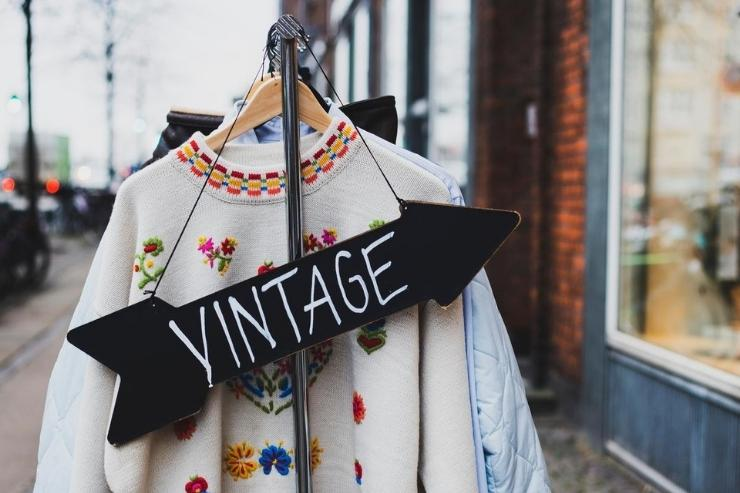

Caracteristicas de la ropa vintage
Temporalidad: Todos los productos de esta tendencia se utilizaron en el pasado (a partir de los años 50’s). Durabilidad: Los artículos deben haber sido utilizados y preservados en buenas condiciones para regresar del pasado. Color: Esta tendencia posee una paleta de colores muy específica de su época, oscila entre los azules y turquesas, grises, cafés y tonos cercanos al salmón. Es decir que, no hay objetos vintage que sean colores chillones o neones, generalmente son pantones que transmiten tranquilidad y serenidad.